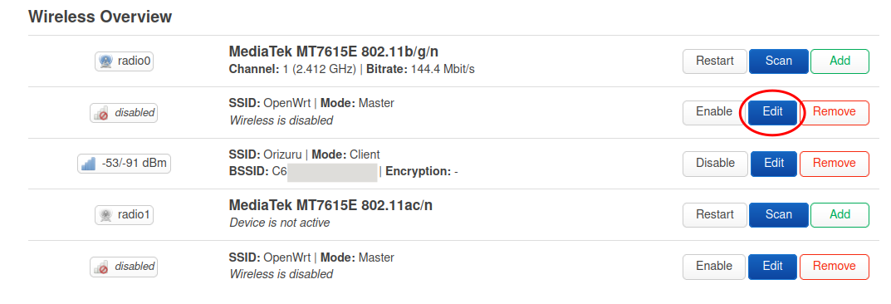
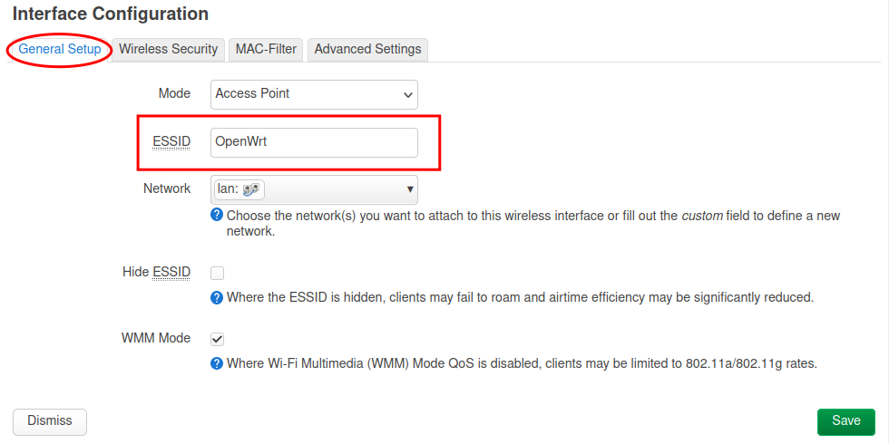
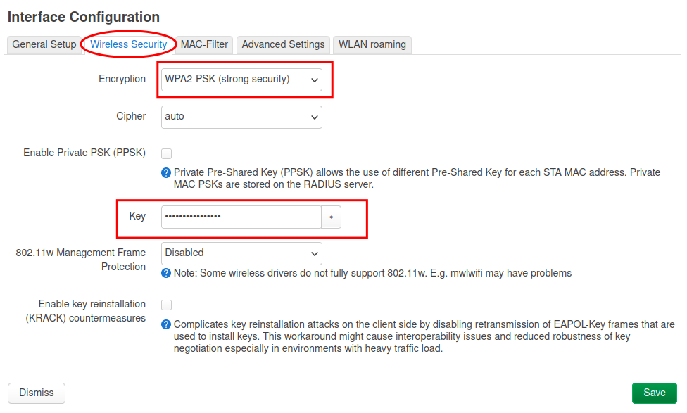
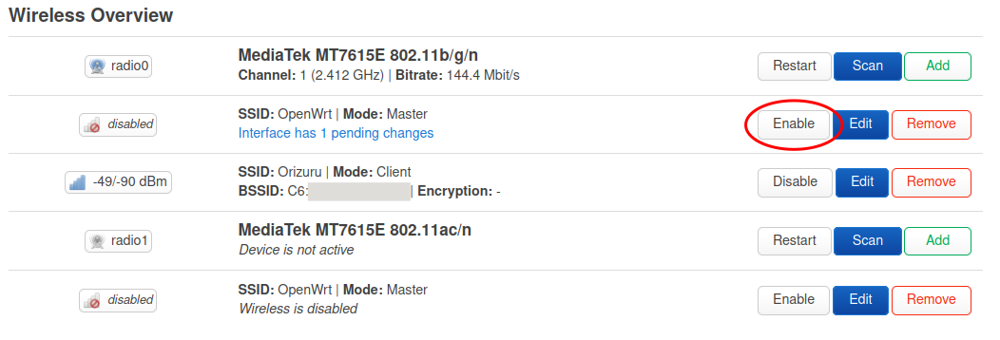

Enable Wifi Access Point
Enable wifi access points in the router so that devices in the visinity (laptops and mobile phones) can connect to the router.
The router has two accesspoints one each for 2.4 GHz and 5 GHz band. The 2.4 GHz band has lower bandwidth, but spans longer distances. The 5 GHz band on the other hand has high bandwidth, but covers only a short distance.
Configure 2.4 GHz Access Point
Click on the Edit button of the first access point (second row).

Set the access point name.

Go to the Wireless Security tab, select WPA2-PSK (strong security) as Encryption and set a password in the Key field.

Click on the Save button.
Once you are back on the wireless overview page, click on the Enable button for the access point.

The 2.GHz access point is now live.
Configure 5 GHz Access Point
Click on the Edit button of the second access point (last row).

Repeat the same steps as in the previous step.
Don't forget to enable to access point at the end.
You can select the same name for both the access points if you want the connecting device to automatically select best of these network, or you can have separate names.
The possible names would be Farmhill Wifi and Farmhill Wifi 5G for 2.4 and 5 GHz respectively.
Verify
Now both the access points are live. You can verify them by connecting to wifi from a laptop or a mobile phone.